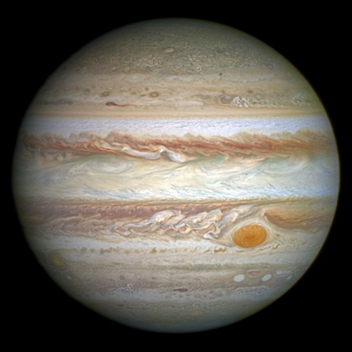

The Jupiter
Solar System Sun Mercury Venus Earth Mars Jupiter Saturn Uranus Neptune Pluto

Definition

Named after a Roman king of the gods, Jupiter is fitting of its name. With a mass of 1.90 x 10 raise to 27kg
and a mean diameter of 139,822 km, Jupiter is easily the largest and most massive planet in the Solar System.
To put this in perspective, it would take 11 Earths lined up next to each other to stretch from one side of
Jupiter to the other and it woul take 317 Earths to equal the mass of Jupiter.
Facts
-The first recorded sighting of Jupiter were by the ancient Babylonians is arounf 7th or 8th BC.
-When Galileo discovered the four moons of Jupiter in 1610 this ws the first proof of celestial bodies
orbiting something other than Earth.
-Jupiter has the shortest day of the eight planets.
-One orbit of the Sun takes Jupiter 11.86 Earth years.
-Jupiter has a faint ring system around it.
-Eight spacecraft have visited Jupiter so far.
-Jupiter has a very strong magnetic field.
-Jupiter has a very unique cloud layer.
-Jupiter is the fourth brightest object in our solar system.
-Jupiter has at least 67 moons is satellite around the planet.
-Jupiter does not experience seasons like other planets such as Earth and Mars.
-The largest of Jupiter's moons, Ganymede is the largest moon in the solar system.
-Jupiter is the only planet that has a center of mass with the Sun that lies outside the volume of the Sun.
-Jupiter's Great Red Spot is an enormous storm that has been raging for over 300 years.
-If Jupiter had become 80 times more massive, nuclear fusion would have occured in its core. 
Profile
Mass :1,898,130,000,000,000,000 billion kg
Equitorial Diameter :142,984 km
Polar Diameter :133,709 km
Equitorial Circumference :439,264 km
Known Moons :67
Notable Moons :Io, Europa,Ganymede, & Callisto
Known Rings :4
Orbit Distance :778,340,821 km (5.20 AU)
Orbit Period :4,332.82 Earth days (11.86 Earth years)
Surface Temperature :-108 degrees Celsius
First Record :7th or 8th Century BC
Recorded By :Babylonian astronomers